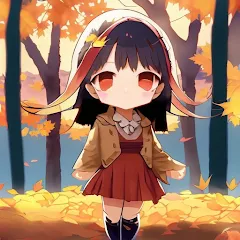
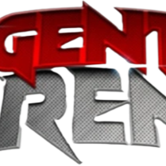
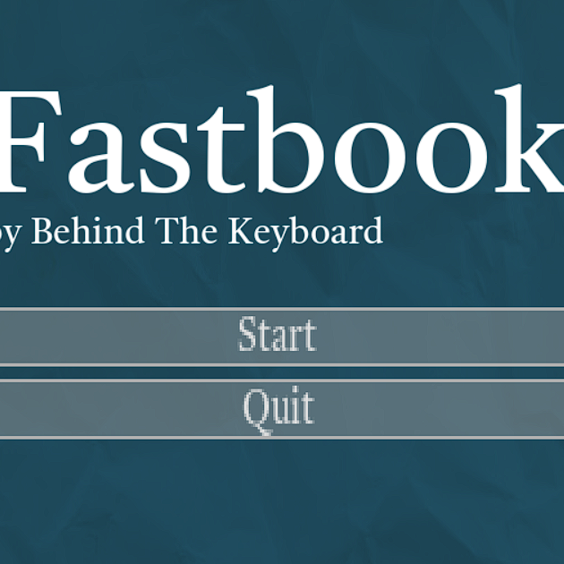

Work Produced/Created
Dynamic AI-Driven NPCs with Real-Time Adaptive Conversations in UE5
Local AI text generation (via Ollama) with real-time voice synthesis (NVIDIA Riva TTS) inside Unreal Engine.
June 2025 - Aug 2025
Perlin Noise Visualization
Web app visualizing Perlin noise with audio controls
Submission for the GitHub Copilot Challenge - Jan 2025
BubGirls
3D Isometric game developed using Unreal Engine
Jan 2025 - Jan 2025
Cyber Ninja
3D Isometric Action Platformer game developed using Unreal Engine
Nov 2024 - Dec 2024

Sarah's Little Adventure
2D Platformer mobile game developed using GDevelop
Oct 2023 - Oct 2023

Ejen Ali: Agents' Arena Wiki
Fandom page for the community of Ejen Ali: Agents' Arena
Jul 2022 - Dec 2022
Legasi
3D Action video game inspired by Penchak Silat and Empu’s blacksmithing
Mar 2022 - Jun 2022

Fastbook
A socially conscious game identifying scam products on social media
May 2022 - May 2022